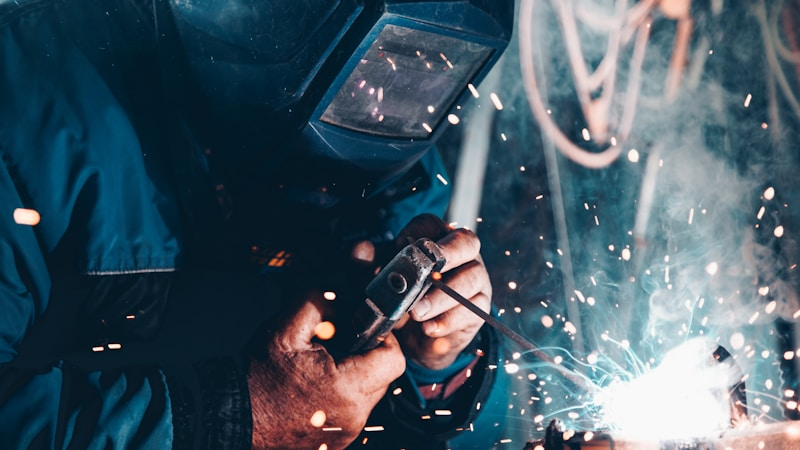

한경협 AI·반도체 성장판, 세제·금융 패키지 구체안 분석

한국경영자총협회는 2025년 내 AI·반도체 분야 국가전략기술 세액공제 확대(현행 대기업 15% → 20% 상향 건의), R&D 세액공제 이월 기간 연장(현행 10년 → 20년), 전력·용수 인프라 투자에 대한 추가 세제 인센티브 등을 정부에 건의한 것으로 확인됐다. 이 중 세액공제율 상향은 국회 조세특례제한법 개정이 필요하다.
한국수출입은행은 창립 50주년(2025년)을 맞아 AI·반도체·이차전지 등 3대 전략산업에 대한 정책금융 지원 한도를 기존 대비 약 30% 확대, 연간 약 15조 원 규모로 운용할 계획을 발표했다. 특히 소부장(소재·부품·장비) 중소·중견 기업에 대한 저금리(시중 대비 1.5~2.0%p 우대) 대출 프로그램이 신설된다.
부산·울산·경남(부울경) 지역은 이번 AI·반도체 국가전략투자 계획에서 사실상 배제됐다는 지역 정재계의 반발이 제기됐다. 정부 계획상 핵심 클러스터가 수도권(용인·평택·화성·이천)에 집중되면서 지역 균형 발전 논란이 가열되고 있으며, 부울경 지역 내 반도체·전자 부품 중소기업 약 1,200여 곳의 정책 지원 접근성이 약화될 우려가 있다.
세제·금융 패키지의 실질 효과는 대기업보다 중소·중견 소부장 기업에서 더 크게 나타날 가능성이 높다. 대기업은 자체 조달 능력이 있으나 소부장 협력사는 수출입은행 정책금융 접근성이 설비투자 결정의 핵심 변수다. 저금리 우대 프로그램 활용 기업이 2025~2026년 CAPA 확장에서 선점 우위를 갖게 된다.
부울경 배제 논란은 단순 지역 갈등이 아니라 공급망 취약성 문제로도 해석된다. 부울경에는 자동차 전장 부품, 조선 특수강, 화학 소재 기업이 집중돼 있으며, 이들이 AI·반도체 연계 소재·부품 산업으로 전환하지 못할 경우 국내 공급망 다양성이 약화된다.
수도권 집중 투자 직접 수혜: 삼성전자(평택), SK하이닉스(용인), 그리고 이들과 장기 납품 계약을 보유한 수도권 소부장 1차 협력사들이 정책금융·세제 혜택의 1차 수혜자. 국가전략기술 세액공제 20% 적용 시 삼성전자·SK하이닉스의 연간 세부담 절감 효과는 각각 수천억 원 수준으로 추산된다.
수출입은행 정책금융 활용 소부장 기업: 소재·부품 전문 코스닥 기업 중 수출입은행 전략산업 대출 프로그램 적격 요건(수출 비중 30% 이상, 전략산업 매출 50% 이상)을 충족하는 기업들은 2025년 하반기 중 저금리 자금 조달 후 설비 확장 공시가 나올 가능성이 높다.
부울경 소재 반도체·전자 중소기업: 국가전략클러스터 지정 지역 외 기업은 입지 보조금·인프라 지원에서 배제되며, 인력 유출(수도권 클러스터로의 이동) 압력도 가중된다. 부울경 내 반도체 관련 중소기업 인력 이탈률은 2023년 이후 연 8~12% 수준으로 추산된다.
세액공제 혜택 사각지대 기업: 적자를 내고 있는 초기 성장 단계 소부장 기업은 세액공제 이월 제도 개선 전까지 실질 혜택을 받지 못한다. 법인세 납부 실적이 없는 기업에게는 세제 인센티브보다 수출입은행 직접 대출이 더 실효적이다.
조세특례제한법 개정안 국회 심의 일정(2025년 정기국회 9~12월)을 추적. 세액공제율 15%→20% 상향 통과 여부는 반도체 대기업의 2026년 설비투자 계획 수립에 직접 영향을 미치므로, 입법 결과를 투자 타이밍 지표로 활용할 것.
수출입은행 전략산업 저금리 대출 신청 공시(DART 공시 항목: 차입금 현황 변동)를 모니터링해 소부장 기업 중 정책금융 선점 기업을 조기 발굴할 것. 통상 대출 승인 후 2~3분기 내 설비 발주로 이어지는 패턴.
실제 조달 현장에서는 — 수도권 반도체 클러스터 인근 소부장 기업들이 인력 확보 경쟁으로 생산직 기준 연봉을 2022년 대비 평균 18~25% 인상하는 사례가 확인되며, 이는 원가 구조에 구조적 압박 요인으로 작용한다. 정책금융으로 설비 투자를 확대하더라도 인건비 상승분을 납품 단가에 전가하지 못하는 중소 협력사의 마진 스퀴즈 리스크를 실적 분석 시 반드시 반영할 것을 권고한다.
이 포스팅은 쿠팡 파트너스 활동의 일환으로 수수료를 제공받습니다.